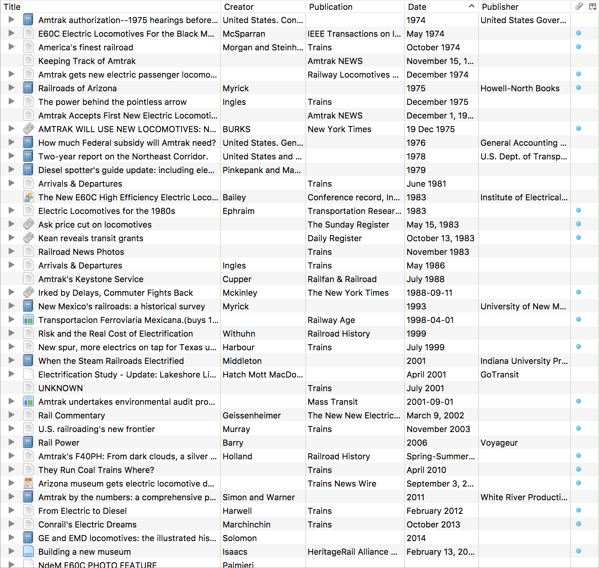
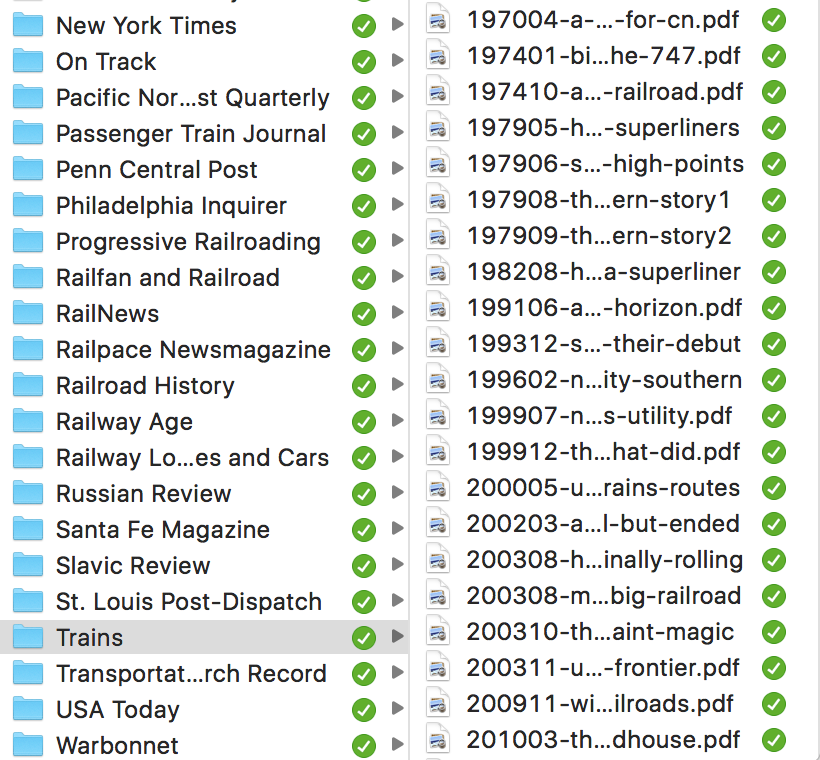

At the end of my blog post about Hammerspoon and case conversion" I had this aside: ” …it works well for storing electronic articles and books.” I’m going to expand a little on that and how it fits into my scheme for organizing information. Hat-tip to nateofnine for prodding me into sharing this.
The Library of Zotero

I use Zotero to keep track of information, mostly related to railroading history. I wrote a post last year about developing a custom translator for importing articles. As of writing I have 1200 items indexed in Zotero: books, chapters, journal and newspaper articles, blog posts, doctoral theses, maps, etc.
Zotero lets you attach things to an entry such as notes or tags. You can also link an external resource. This might be a website, or a link to the a local copy of the document if one exists. Zotero lets you sync content to its cloud, but the free tier is limited to 300 MB. If you’re storing article PDFs you’ll exceed that pretty quickly. Leaving aside HTML snapshots, I have 249 articles consuming ~2.5 GB of space.
Let the data flow
Electronic documents come from all over the place—interlibrary loan, online databases, websites, scans I’ve done myself of physical media that I possess but need to store. The only common factor that is that they become a PDF and I need to organize them.
I start by having a folder structure with a top-level folder named Articles. Beneath that I organize by publication, with definite articles removed to permit natural sorting (thus The New York Times becomes New York Times). Within each publication I adopt a naming convention of DATE-NAME. Date is of the format YYYY, YYYYMM, or YYYYMMDD, depending on the granularity of the publication. A monthly journal, for example, will go no further than YYYYMM. The purpose of this is to ensure chronological sorting when looking at the articles outside of Zotero.
For the NAME, I fall back on my Hammerspoon case conversion module. I’ve already created an entry for the item in Zotero, with its full title. I throw that title into the case conversion, get the slug, and append it to the date. This gives me a filename that sorts by date, is human-readable if need be, and is easy to manipulate from the command line. For example, J. David Ingles’ article in Trains magazine from the May 1979 issue entitled “How super are the Superliners?” becomes 197905-how-super-are-the-superliners.
Putting it all together

The file created, I drop it into the appropriate publication folder, then use the “Add Attachment > Attach Link to File” option in Zotero to associate it with the index. Now, when I double-click on the item in Zotero, it’ll open the file for me to read. The Articles directory tree lives on my Nextcloud which means that (a) there’s redundancy in case something happens to my laptop and (b) I can read the articles on my phone, without needing to have Zotero installed.